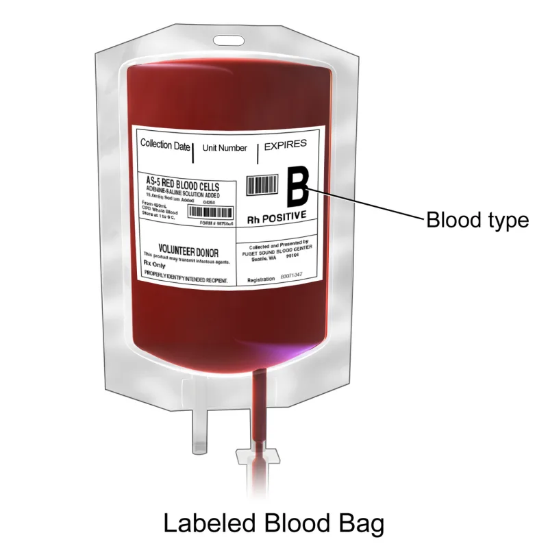
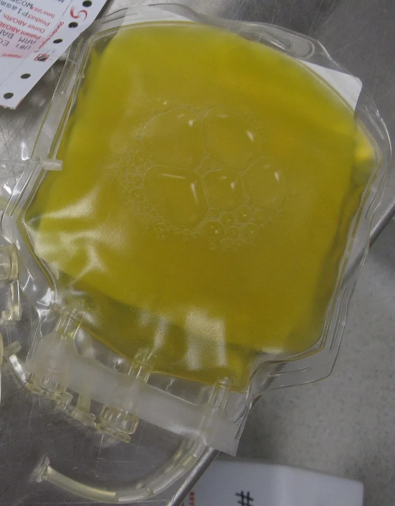

No good counter-argument has been published by the Watchtower.
Current policy comes from Questions From Readers in The Watchtower of June 15, 2000 (pp. 29-31).
Whole blood is forbidden. So are its four primary components: red cells, white cells, platelets and plasma.
Fractions of those components are left to each person's conscience. A chart in The Watchtower of June 15, 2004 (pp.
22-24) lays it out.
Hemoglobin is allowed as a fraction. But hemoglobin is the bulk of a red cell, and it is the thing a red-cell transfusion delivers.
The red cell that carries it is forbidden. Albumin comes from plasma and is allowed.
Plasma, which is about 90% water, is forbidden. As late as 1998, Watchtower representatives wrote that Witnesses do not accept hemoglobin.
Two years later they could.
Every permitted fraction is made from pooled, donated, stored blood. Witnesses may not donate blood, and may not store their own.
So the policy depends on other people breaking the very law that Witnesses die to keep.
The Bible names blood, and the four primary components essentially are blood as it circulates. Once a component is broken down into small fractions, it is no longer blood in the scriptural sense.
They compare it to foods that come from animals fed on blood. Scripture draws no line about fractions, so the Governing Body leaves them to conscience rather than legislating beyond what is written.
Not donating shows respect for blood, and how the world sources its medicines is the world's affair.
Strong for you, and this one decides who lives. The details are all published, and the core objection has never been answered.
Hemoglobin is the working mass of the forbidden red cell, so the "no longer blood" rule contradicts the component ban itself. AJWRB, founded by medical professionals connected to the religion, is the best single source.
"Hemoglobin is allowed and the red cell that carries it is not. Who decided where that line falls, and on what verse?"


Small fractions are no longer blood, and Scripture draws no line about them.
The Witness defense runs like this. The Bible names blood, and the four primary parts essentially are blood as it circulates. Once a part is broken down into small fractions, it is no longer blood in the scriptural sense. They compare it to foods that come from animals fed on blood.
Scripture draws no line about fractions. So the Governing Body leaves them to conscience, rather than ruling beyond what is written. Not donating shows respect for the sacredness of blood. And how the world sources its medicines is the world's affair.
Strong for you, and this line decides who lives. Ask who drew it.
The details are all admitted, since they are published in charts. The core objection has never been answered on the merits.
Hemoglobin is the working mass of the banned red cell. So the 'no longer blood' principle contradicts the ban on parts. The donation gap is conceded by silence. Witnesses accept products that only other people may give.
AJWRB was founded by medical professionals connected to the religion, and it is the best single source. Severity is critical, because this line decides who dies.